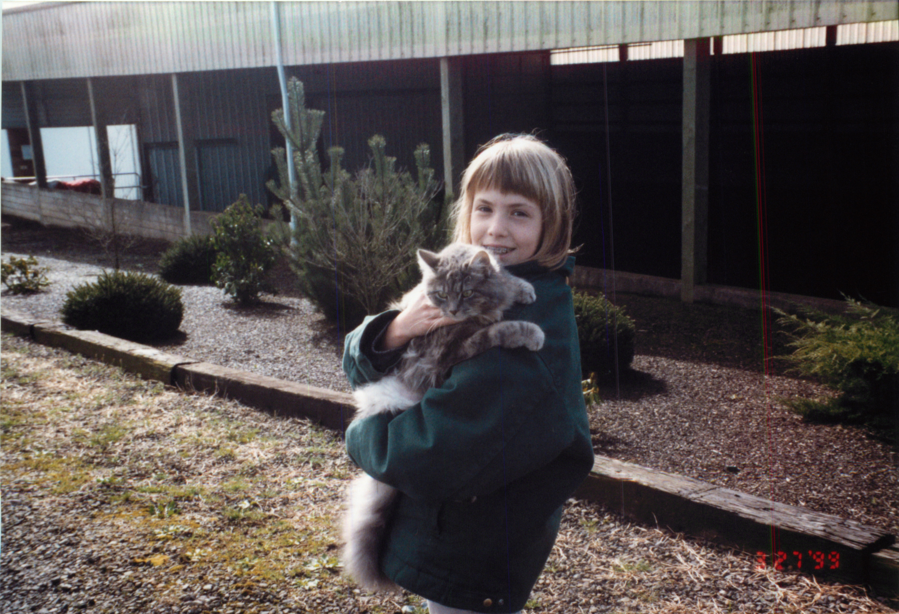

Home
Pre '90s
'90-'93
'93-'96
'96-'00
Post '90s
1996 - 2000

Keeping it real with my homie
Shortly after we moved back to Oregon my parents bought a 14 acre ranch.
From then until I graduated high school, I had to get up at 5:45 to take care of the animals.
I still had no sense of fashion.